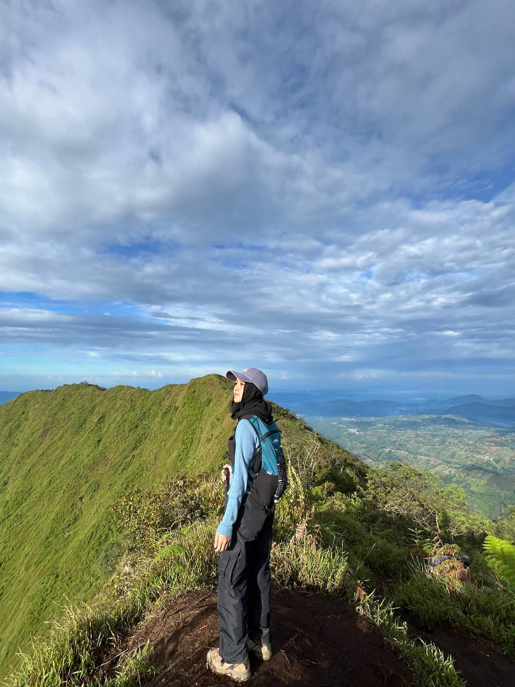
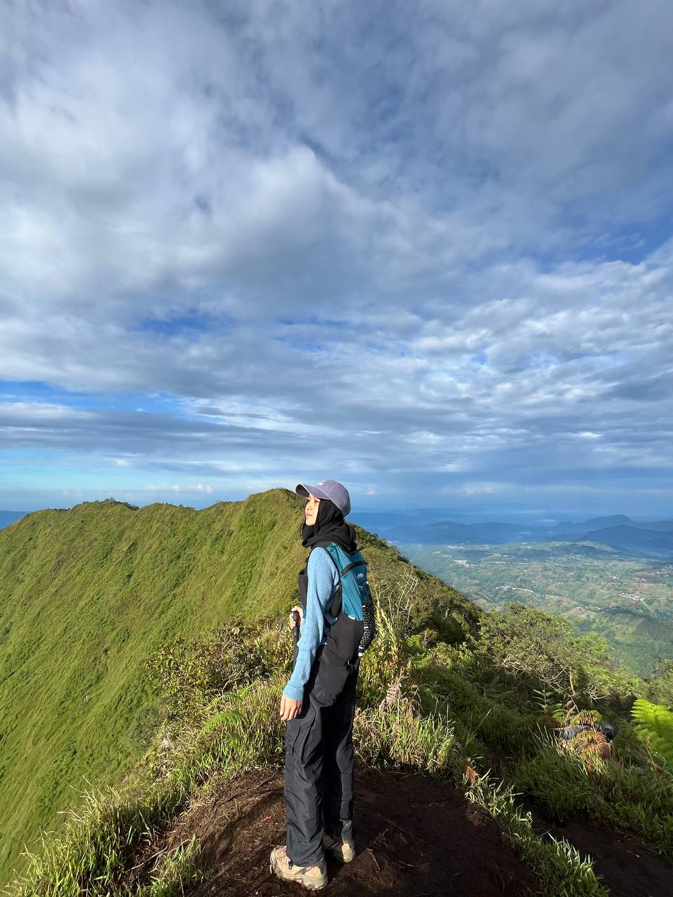

BIOGRAPHY
I am Alisya Rizka Dewi NIM 231110114. This website is intended to complete the mid-semester exam assignment from the web programming practicum course.
A little about me, I am often called Alee, As an ambivert, I have a balance between introvert and extrovert traits that help me interact with various groups. I have many hobbies, especially in sports. I really like badminton. In addition, lately I have also had a great interest in hiking.